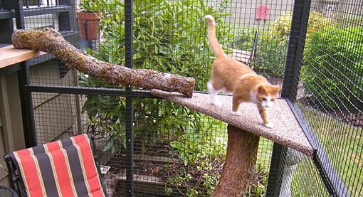

from vehicles, predators, poisons, diseases from
other animals or getting lost. Like dogs and small children, cats who are let outdoors
without supervision are vulnerable to the dangers of cars, other animals, cruel people,
and diseases. Many people consider free-roaming cats to be pests. They do not want
cats to urinate, defecate, dig, eat plants, or kill birds on their property.
Across the country, free-roaming cats are shot, poisoned, and stolen by
angry neighbors. They are also mutilated, drowned, beaten, set on fire,
used in ritual sacrifice, or used by dogfighters as “bait.”
Reduce Vet Bills
from cat fights, injuries and diseases. (In addition to a dramatically lowered life expectancy,
there is an increased risk of disease.) Feline leukemia, feline AIDS (FIV),
feline infectious peritonitis (FIP), toxoplasmosis, distemper, heartworm, and rabies
can be difficult to detect and, in the case of FIP and distemper, impossible to test
for. They are also highly contagious and can easily be passed on to other companion
animals.

Provide a healthy Outdoor Lifestlye
with fresh air, exercise, bird watching and sunbathing! Catio Cat Enclosure
Interior Sanctuary CatiospacesCat enclosures are a fantastic way to enrich
you and your cat’s lives. From providing a safe and stimulating outdoor living
space to reducing indoor odors, a catio is the latest in cat wellbeing.
Catios add territory for your cat and, if large enough, make way for you to
enjoy outdoor time and wildlife watching together. We offer a variety of
designs and sizes for a window, deck, patio or yard that can accommodate any
sized cat family.